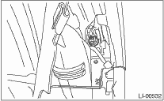
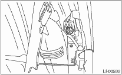

1. Disconnect the ground cable from the battery.
2. Remove the three clips holding the mud guard.

3. Turn over the mud guard and turn the socket and then remove the bulb.

LIGHTING SYSTEM > Front Turn Signal Light Bulb
1. Disconnect the ground cable from the battery.
2. Remove the three clips holding the mud guard.
3. Turn over the mud guard and turn the socket and then remove the bulb.
